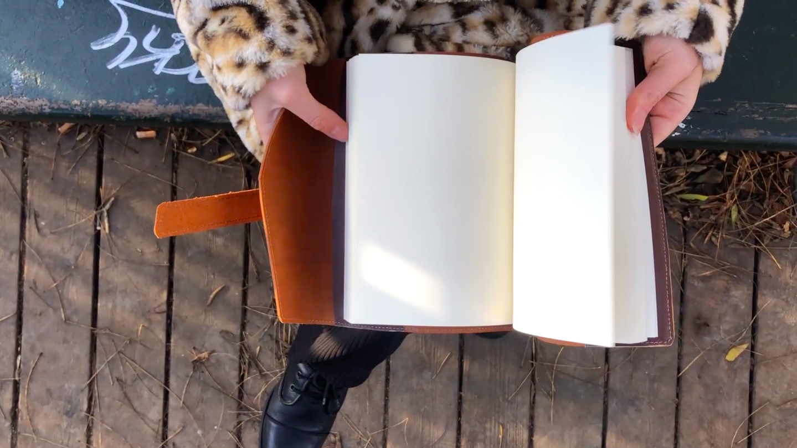
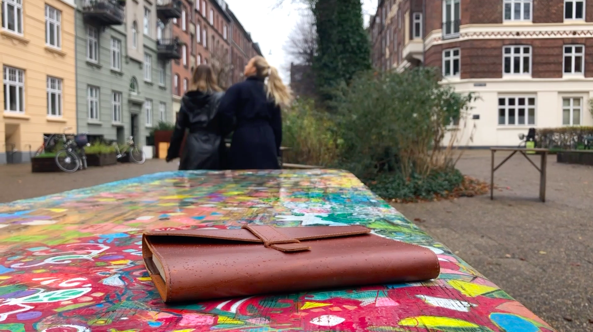
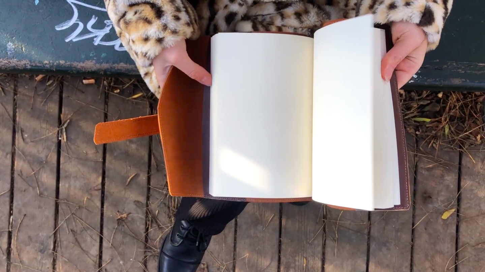
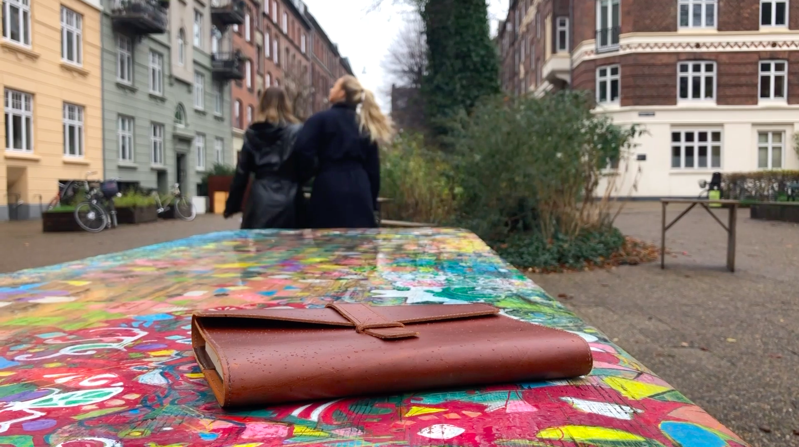

BASIC CONTENT
A STORY WITHOUT WORDS
TASK
TASK
The main task of this assignment was to familiarise ourselves with Premiere Pro program and apply S.C.R.A.P. as FAMO rules. The video couldn't include any dialogue in order to present story fully with the images. Additionally, it was an introduction to working on a film in a group.
PROCESS
PROCESS
The process started with brainstorming ideas for the video. We decided on a story of a girl that forgets her diary in the park which is later found by another person. This leads to them meetings and becoming close friends. First part of the story was filmed by two members of the group - we worked a lot with close-ups, motion and natural light. This allowed to get closer to the main character and portray the pace of the story. After filming both parts of the story, we divided the work and each of us put our part together. This way all of us managed to work with Premiere Pro - cutting and adding scenes together.
RESULT
RESULT
This short film has allowed me to get insights to working with camera and different angles whilst following certain rules. Through utilisation of close-ups, motion and obstruction we were able to introduce more life to the story. Additionially, I have learnt the basis of Premiere Pro - cutting, putting scenes together, basic colour correction and effects as well as adding music.
 


Shots from the film